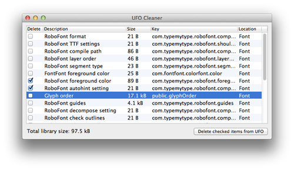
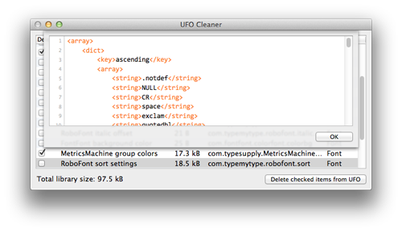

UFO Cleaner displays a list of items that are stored in the library of the current UFO. Items can then be marked for deletion, or double-clicked to display their contents.
This is to reduce the UFO file size, and to protect your privacy by wiping out internal production data.

The main view displays a list of all library items. Items are identified by their key, which is displayed in the fourth column.
Marking a check box in the first column means that this item will be deleted from the UFO library when you press the delete button.
Double-clicking a row brings up a sheet which shows the contents of the selected library item.

RoboFont layers are also stored in the UFO library, and take up considerable space there, but they can’t be accessed from within RoboFont via the library.
UFO Cleaner is © 2013 by Jens Kutilek.